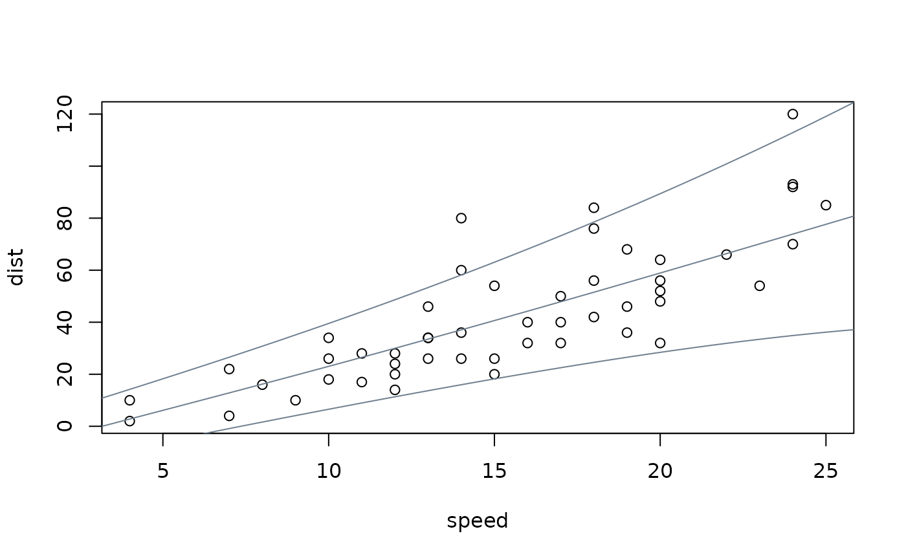
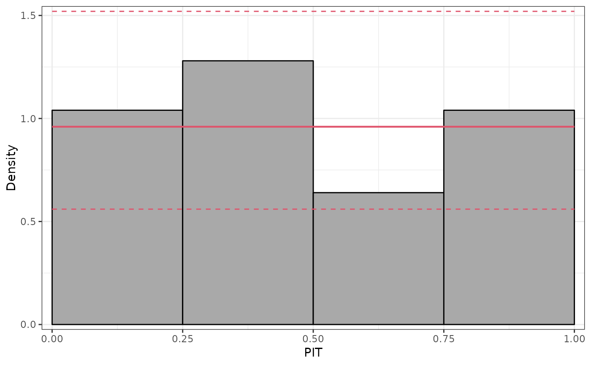
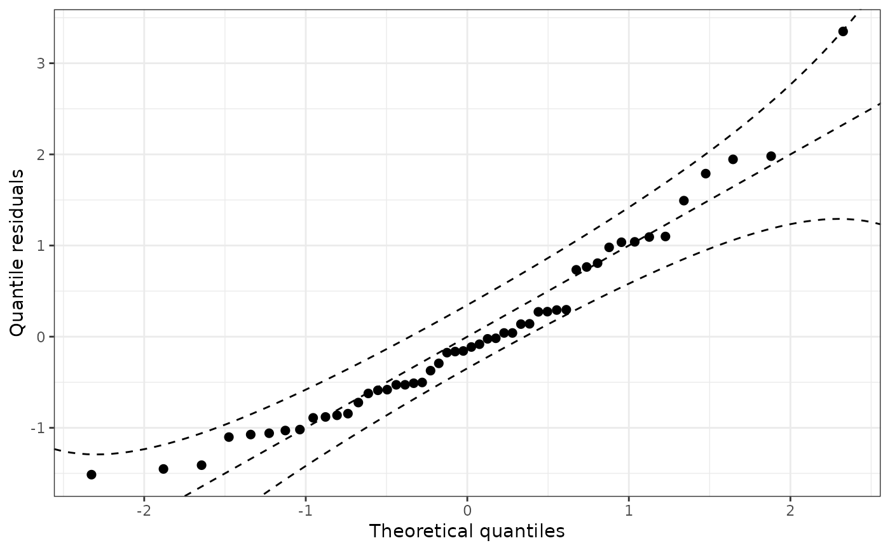

prodist.gamlss.RdMethods for gamlss model objects for extracting fitted (in-sample) or predicted (out-of-sample) probability distribution objects.
# S3 method for gamlss
prodist(object, ...)A model object of class gamlss.
Arguments passed on to predictAll,
e.g., newdata.
An object inheriting from distribution.
To facilitate making probabilistic forecasts based on gamlss
model objects, the prodist method extracts fitted or
predicted probability distribution objects. Internally, the
predictAll method from the gamlss package is
used first to obtain the distribution parameters (mu, sigma, tau,
nu, or a subset thereof). Subsequently, the corresponding distribution
object is set up using GAMLSS, enabling the workflow provided by
the distributions3 package.
Note that these probability distributions only reflect the random variation in the dependent variable based on the model employed (and its associated distributional assumption for the dependent variable). This does not capture the uncertainty in the parameter estimates.
if(!requireNamespace("gamlss")) {
if(interactive() || is.na(Sys.getenv("_R_CHECK_PACKAGE_NAME_", NA))) {
stop("not all packages required for the example are installed")
} else q() }
#> Loading required namespace: gamlss
## packages, code, and data
library("gamlss")
#> Loading required package: splines
#> Loading required package: gamlss.data
#>
#> Attaching package: ‘gamlss.data’
#> The following object is masked from ‘package:datasets’:
#>
#> sleep
#> Loading required package: gamlss.dist
#> Loading required package: MASS
#>
#> Attaching package: ‘gamlss.dist’
#> The following object is masked from ‘package:distributions3’:
#>
#> GP
#> The following object is masked from ‘package:topmodels’:
#>
#> GAMLSS
#> Loading required package: parallel
#> ********** GAMLSS Version 5.4-10 **********
#> For more on GAMLSS look at https://www.gamlss.com/
#> Type gamlssNews() to see new features/changes/bug fixes.
#>
#> Attaching package: ‘gamlss’
#> The following object is masked from ‘package:distributions3’:
#>
#> random
library("distributions3")
data("cars", package = "datasets")
## fit heteroscedastic normal GAMLSS model
m <- gamlss(dist ~ pb(speed), ~ pb(speed), data = cars, family = "NO")
#> GAMLSS-RS iteration 1: Global Deviance = 405.0909
#> GAMLSS-RS iteration 2: Global Deviance = 405.5848
#> GAMLSS-RS iteration 3: Global Deviance = 405.6121
#> GAMLSS-RS iteration 4: Global Deviance = 405.6143
#> GAMLSS-RS iteration 5: Global Deviance = 405.6151
## obtain predicted distributions for three levels of speed
d <- prodist(m, newdata = data.frame(speed = c(10, 20, 30)))
#> new prediction
#> New way of prediction in pb() (starting from GAMLSS version 5.0-3)
#> new prediction
#> New way of prediction in pb() (starting from GAMLSS version 5.0-3)
print(d)
#> [1] "GAMLSS NO distribution (mu = 23.04, sigma = 10.03)"
#> [2] "GAMLSS NO distribution (mu = 58.91, sigma = 18.54)"
#> [3] "GAMLSS NO distribution (mu = 96.44, sigma = 34.28)"
## obtain quantiles (works the same for any distribution object 'd' !!)
quantile(d, 0.5)
#> [1] 23.03774 58.91010 96.44087
quantile(d, c(0.05, 0.5, 0.95), elementwise = FALSE)
#> q_0.05 q_0.5 q_0.95
#> [1,] 6.54516 23.03774 39.53033
#> [2,] 28.41281 58.91010 89.40739
#> [3,] 40.04718 96.44087 152.83456
quantile(d, c(0.05, 0.5, 0.95), elementwise = TRUE)
#> [1] 6.54516 58.91010 152.83456
## visualization
plot(dist ~ speed, data = cars)
nd <- data.frame(speed = 0:240/4)
nd$dist <- prodist(m, newdata = nd)
#> new prediction
#> New way of prediction in pb() (starting from GAMLSS version 5.0-3)
#> new prediction
#> New way of prediction in pb() (starting from GAMLSS version 5.0-3)
nd$fit <- quantile(nd$dist, c(0.05, 0.5, 0.95))
matplot(nd$speed, nd$fit, type = "l", lty = 1, col = "slategray", add = TRUE)

## moments
mean(d)
#> [1] 23.03774 58.91010 96.44087
variance(d)
#> [1] 100.5363 343.7700 1175.4562
## simulate random numbers
random(d, 5)
#> Error in random(d, 5): random() expects a factor as its first argument
## density and distribution
pdf(d, 50 * -2:2)
#> d_-100 d_-50 d_0 d_50 d_100
#> [1,] 7.993342e-35 1.196174e-13 0.0028406272 0.001070505 6.402020e-15
#> [2,] 2.408383e-18 6.923852e-10 0.0001382448 0.019170274 1.846234e-03
#> [3,] 8.651411e-10 1.271130e-06 0.0002226492 0.004649219 1.157355e-02
cdf(d, 50 * -2:2)
#> p_-100 p_-50 p_0 p_50 p_100
#> [1,] 6.488959e-35 1.617107e-13 0.0107916676 0.99641695 1.0000000
#> [2,] 5.141843e-18 2.126983e-09 0.0007433125 0.31541429 0.9866597
#> [3,] 5.031698e-09 9.717270e-06 0.0024546680 0.08777945 0.5413401
## further diagnostics: graphical and scores
pithist(m)

qqrplot(m)

proscore(m, type = c("LogLik", "CRPS", "MAE", "MSE"), aggregate = TRUE)
#> LogLik CRPS MAE MSE
#> 1 -4.056151 8.111661 11.31396 228.3665
## note that proscore can replicate logLik() value
proscore(m, aggregate = sum)
#> loglikelihood
#> 1 -202.8075
logLik(m)
#> 'log Lik.' -202.8075 (df=4.230591)
## Poisson example
data("FIFA2018", package = "distributions3")
m2 <- gamlss(goals ~ pb(difference), data = FIFA2018, family = "PO")
#> GAMLSS-RS iteration 1: Global Deviance = 355.3941
#> GAMLSS-RS iteration 2: Global Deviance = 355.3941
d2 <- prodist(m2, newdata = data.frame(difference = 0))
#> new prediction
#> New way of prediction in pb() (starting from GAMLSS version 5.0-3)
print(d2)
#> [1] "GAMLSS PO distribution (mu = 1.237)"
quantile(d2, c(0.05, 0.5, 0.95))
#> [1] 0 1 3